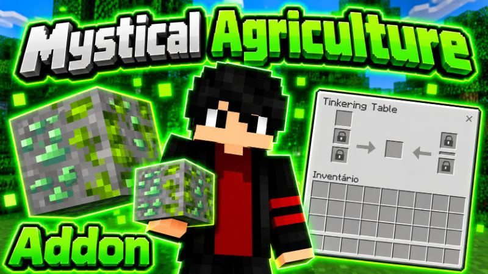

How to install
- Download the file.
- Open it with Minecraft (tap the file and choose Minecraft). It imports by itself.
- Create or edit a world, open Add-ons and turn the packs on.
- If something does not work, turn on the Experimental toggles listed on this page.
On iPhone, open the file from the Files app and choose “Open in Minecraft”. If the download opens another page first, wait a few seconds and press its download button.
Mystical Agriculture -
Mystical Agriculture introduces a new agricultural and resource-generation system to Minecraft, allowing players to grow crops that produce a wide variety of materials, minerals, mob drops, and other valuable resources.
The addon adds numerous new items and blocks, including mystical seeds, essence crops, special farmland, growth accelerators, infusion altars, awakening altars, harvesters, and other machines designed to expand and automate resource production.
It also features multiple tiers of materials, such as Inferium, Prudentium, Tertium, Imperium, Supremium, and Insanium, each offering increasingly powerful equipment and crafting possibilities.
Players can craft new tools, armor, watering cans, augments, and upgrades that provide special abilities and improvements. Additional resources include Dragon Scales, Soulstone, Soulium, Nether Star Essence, and many other materials.
With a wide variety of crops, crafting recipes, machines, and progression systems, Mystical Agriculture offers new ways to gather resources, automate production, and develop your Minecraft world.
Credits & License
Originally created by BlakeBr0. This is an unofficial Bedrock Edition port of the original Java mod.
Original Creator: BlakeBr0
Bedrock Port: JakeF0xx
Studio: MCNexus Studio
License: MIT License
This project follows the terms of the MIT License. The original license and copyright notices are preserved, and the corresponding source code is made available as required by the license.